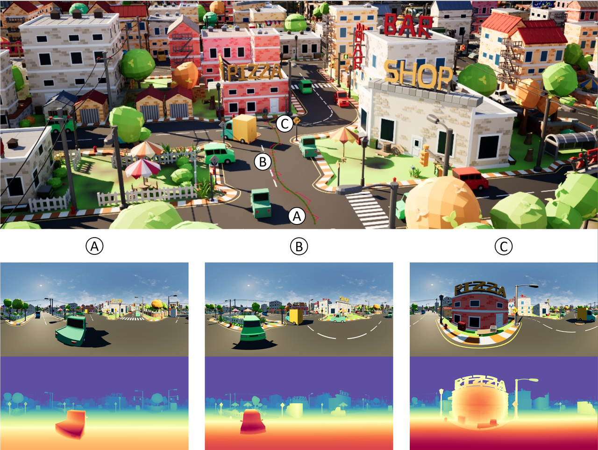

Matrix-Pano Dataset: Scalable Synthetic Panoramic Videos
Existing 3D scene datasets are often limited in scale, inconsistent in quality, and lack accurate camera and geometric annotations. Meanwhile, collecting real-world 3D scene data remains costly. To address these challenges, we introduce the Matrix-Pano dataset—a scalable synthetic panoramic video dataset designed for generating high-quality, explorable panoramic sequences.
Dataset Construction & Features

Automated Trajectory Generation & Capture
Scale & Open Source Plan
Through a rigorous multi-stage generation and filtering process, we retained 116,759 high-quality panoramic video sequences, each annotated with its corresponding 3D exploration path. A curated subset will be open-sourced to promote research and development in panoramic video generation and 3D scene understanding.
BibTeX
@article{XXX,
title={Matrix-3D: Omnidirectional Explorable 3D World Generation},
author={}
}